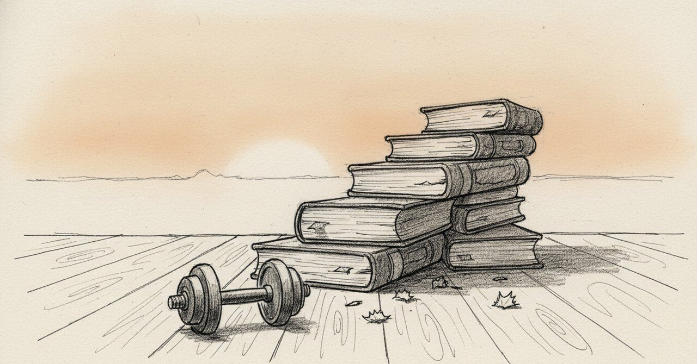

23時52分、元カノを『大切な存在』と書いた夜

2024年9月28日、23時52分、ノートに「俺の事を本当に考えてくれている大切な存在」と書いた。
今日の現場
2026年1月20日、半年の振り返りをしながら、こう書いた。
「Dラボ入って一年5ヶ月でかなり変わったよー」
「元カノとの別れがきっかけだったけど、フィジカル最初鍛えてその時よりマイナス8キロ」
「その後はメンタルや内面を鍛えたり観察するために、割り切りの女の子と感情込みの関係を作ってみたり」
「そして元カノに会う日に向けて内面を整えたり、最近会う人との関係での日々の確認など」
フィジカルから入って、メンタルや内面の観察に進んで、その内面を関係の中で確かめている。8キロという外側の変化は、いちばん最初の段階だ。今は、関係の中で自分の内面を観察する段階にいる。
「ビフォーアフター、すごい」と他人事みたいに書いた。本当に他人事みたいに書けるくらい、当時の自分から距離が出た。
あの頃と今
1年4ヶ月前のノートに戻る。
「23:52。今日は21時頃帰宅した。部下と面談して来月取り組むことを共有確認した。きっとやってくれそうな気がしている。夜は惣菜の残りを食べた」
「ジムでは1時間半程度のトレーニング。少し軽めだったかな？それでも続けることが大切」
「元カノと一緒に過ごした。元カノは私に本当の意味での自立を願っている。だから厳しいことも伝えてくる。わかってるからこそ、きちんと向き合って欲しいと考えている。俺の事を本当に考えてくれている大切な存在」
「俺が何者か何を望んで生きているのかしっかり考えなきゃ」
「明日も頑張ろう」
その夜の私は、元カノからの厳しさに「自立を願ってくれている」と意味を見ていた。「俺が何者か何を望んでいるのか考えなきゃ」と書いた。考えなきゃ、と書きながら、まだ答えはなかった。ジムのトレーニングを「軽めだったかな？」と書いた、その日にいた。
頭の中
「自立を願ってくれている」と感謝した夜から、「Dラボ1年5ヶ月で変わった」と書ける今までの間に、フィジカル、メンタル、内面、関係、という順番で章が積まれていった。
別れがあったから、その章を全部書けた、と思う。あの夜の私が、元カノに「本当に考えてくれている大切な存在」と書けたのは、その厳しさを愛として受け取れていたからだ。今振り返ると、その受け取り方ができた時点で、自立はもう少しずつ始まっていた。
別の見方もある。Dラボに入って変わった、と書きながらも、変わったと言える基準はずっと「元カノにどう見せられるか」のままだった気がする。「元カノに会う日に向けて内面を整えたり」と、今も書いている。本当に自立できているなら、そもそも会う日に向けて整える必要はないのかもしれない。
まだ途中のこと
8キロ減って、フィジカルは変わった。メンタルや内面も観察できるようになった。最近会う人との関係でも、焦らない自分でいられている。
それでも、元カノに会う日に向けて内面を整える、という言い回しが、まだノートに残っている。それが完全に消えたとき、たぶん本当の意味で自立した、と書けるんだろう。
そこまではまだ届いていない。1年5ヶ月でここまで来た、というのは、たぶん途中の話だ。
こうした記録を続けています。よければ、また読みに来てください。
#日記 #ジャーナリング #内省 #自立 #AkariLab